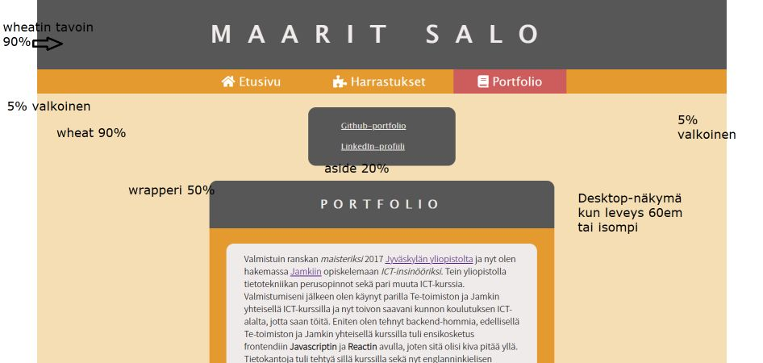
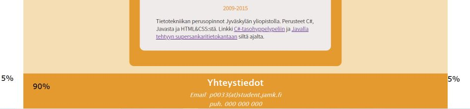
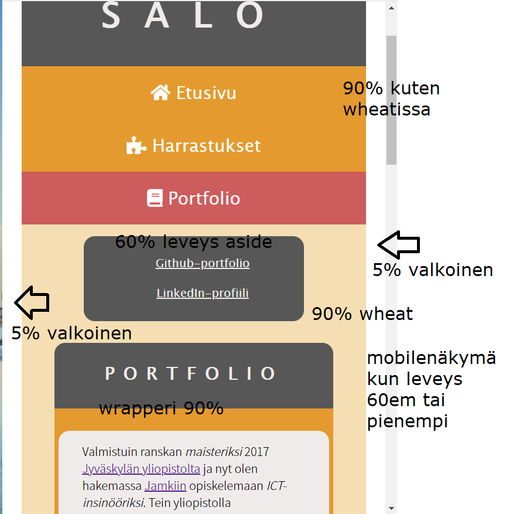
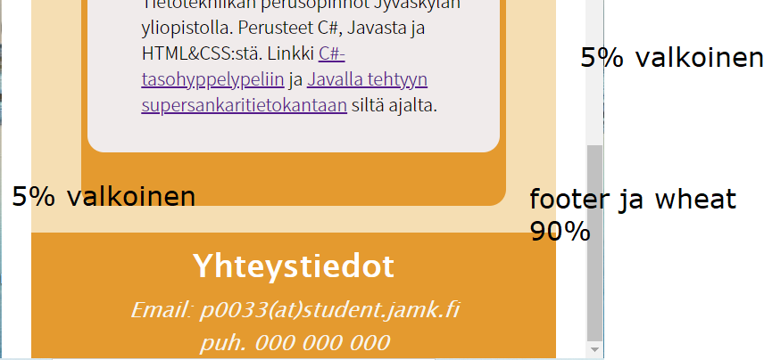

Desktop
Kuten kuvissa näkyy, koko body on 100%, joista 90% on varattu keskiosalle eli articlelle (kuvassa tähän viitataan sanalla wheat, viitaten taustaväriin). Header, nav ja footer ovat myös 90%. Valkoinen ympäristö vie yhteensä 10%, eli 5% per laita. Wrapperi joka sisältää rakenneotsikon ja perussisällön on 50%, ja aside 20%.
 Mobile
Kuten kuvissa näkyy, mobileleiska on hyvin samantapainen mutta litistetympi. Article (wheat) vie edelleen 90% koko bodyn leveydestä, ja valkoiset osat 10% eli 5% per laita. Wrapperi vie articlen leveydestä 90%. Aside vie nyt 60% articlen leveydestä. Footer, kuten article, on edelleen 90% koko bodyn leveydestä.
 